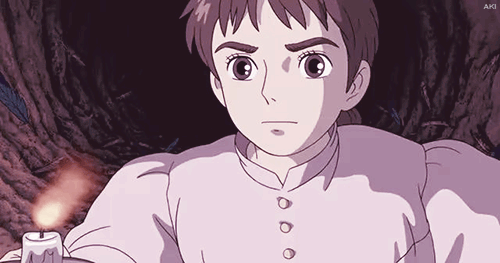

Howl no Ugoku Shiro

• Descripción •
Howl no Ugoku Shiro, en ingles como "Howl's Moving Castle", conocida en España como "El castillo ambulante" y en Hispanoamérica como "El increíble castillo vagabundo", es una película de animación japonesa creada por Studio Ghibli, producida por Toshio Suzuki y dirigida por Hayao Miyazaki. Howl no Ugoku Shiro, conocida en España como "El castillo ambulante" y en Hispanoamérica como "El increíble castillo vagabundo", es una película de animación japonesa creada por Studio Ghibli, producida por Toshio Suzuki y dirigida por Hayao Miyazaki.
La película se estrenó el 5 de septiembre de 2004 en el Festival Internacional de Cine de Venecia, y el 20 de noviembre de 2004 en los cines de Japón.
Obtuvo allí una recaudación de 190 millones de dólares y 235 millones a nivel mundial, convirtiéndose así en una de las películas más taquilleras de la historia del cine en Japón.
• Sipnosis •
Sophie tiene 18 años. Trabaja sin descanso en la tienda de sombreros que mantenía su padre antes de fallecer. En uno de sus poco frecuentes paseos por la ciudad, Sophie conoce al mago Howl. Howl es un joven con poderes extraordinarios y extremadamente seductor. Sin embrago, a Sophie le da la impresión de que Howl esconde algo.
El encuentro entre Sophie y Howl no ha pasado desapercibido para la Bruja de las Landas, quien odia visceralmente a Howl. Cuando Sophie vuelve a la tienda, la Bruja, haciéndose pasar por una clienta, la engaña y la hechiza, transformándola en una anciana de 90 años que no puede revelar su verdadera identidad.
Sophie, imposibilitada para decirle a sus amigas y compañeras quién es realmente y lo que le ha pasado, se ve obligada a abandonar su casa y decide entonces buscar a Howl para que le ayude a romper el hechizo. Howl vive en un castillo mágico que tiene la peculiaridad de trasladarse a voluntad de su dueño. Sophie se adentra en lo desconocido, en busca del castillo ambulante, perdiéndose en tierras desoladas. Finalmente y casi por casualidad, llega al lugar en el que se encuentra la residencia de Howl.
Allí conoce al joven aprendiz del mago, Mark, y al encargado del mantenimiento del castillo, Calcifer, el demonio del fuego. Al no poder revelar su identidad, Sophie tiene que inventar alguna excusa para quedarse en el castillo, y consigue que la contraten de como asistenta. Esta anciana tan misteriosa y dinámica le dará en poco tiempo un nuevo aspecto a la descuidada residencia de Howl, consiguiendo que parezca un verdadero hogar.
Pero la aventura no ha hecho más que empezar ¿Qué fabuloso destino le aguarda a Sophie? ¿Qué secretos esconde Howl en su castillo ambulante?
• Trailer •
• Personajes Principales •
| Personaje | Descripción |
|---|---|
| Sophie | Es una joven de dieciocho años que trabaja en una sombrerería. Es víctima de una maldición por parte de la Bruja Calamidad que le hace tener la apariencia de una mujer de noventa años. |
| Howl | Es el amo y señor del castillo ambulante. Es un mago dotado de un poder inmesurable del que se cuentan varias leyendas, entre ellas que se dedica a robar el corazón de mujeres jóvenes y bellas. |
| Bruja Calamidad | Es una malvada bruja que persigue a Howl para adueñarse de su corazón. De acuerdo con Howl, la Bruja Calamidad alguna vez fue una bella mujer, motivo por el cual se acercó a ella, pero terminó huyendo al ver cómo era realmente. |
| Mark | Es el joven discípulo de Howl. Es huérfano y se encarga de recibir a los visitantes que llegan al castillo para ver al mago o a los enviados del rey que portan cartas de invitación. |
| Calcifer | Es un demonio de fuego, encargado de mantener la energía del castillo ambulante. Irónico y bromista, promete ayudar a Sophie pero a cambio debe ayudarlo a liberarse del pacto que lo ata a Howl. |
| Cabeza de Nabo | Un espantapájaros que siempre intenta ayudar a Sophie. Hace honor a su nombre al tener un nabo como cabeza. |
• Banda Sonora •
La banda sonora corrió a cargo de Joe Hisaishi,realizó la banda sonora inspirándose en los valses de la época del Romanticismo; en música popular como el Schottisch, baile típico de Suiza, y en compositores románticos como Frédéric Chopin o Richard Wagner.

Hisaishi y Youmi Kimura también compusieron "Howl's Moving Castle CD Maxi-Single" (tema pincipal de la pelicula), un disco con sencillos para radio que se publicó en octubre de 2004, y en el cual se incluye el tema central de la película ("The Merry-Go-Round of Life"), cantado por Chieko Baishō, la versión karaoke del tema central y una versión instrumental de piano. Más tarde, Hisaishi crearía la sinfonía de El castillo ambulante, cuyo álbum saldría publicado en enero del 2005 con arreglos y mayores piezas que la banda sonora original.
•••